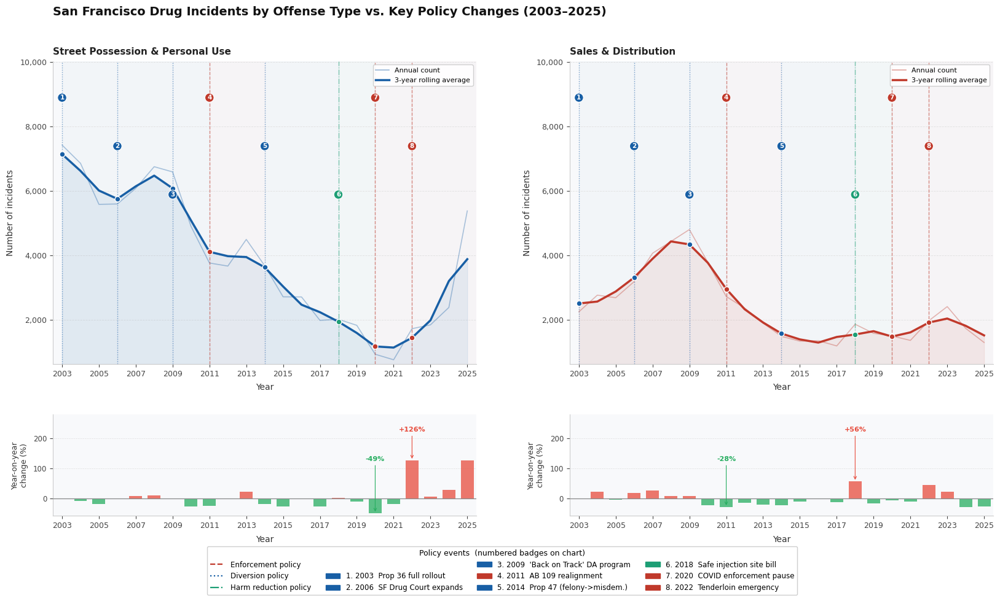

In the last decades, San Francisco has adopted different policies to try to fight
drug crimes. Its perspective has changed from enforcement to a more harm-reduction focused approach.
This strategy seemed to be working, but the drug crimes have increased in recent years.
This is what the data shows.
A brief story of policies in the city.
For much of the 20th century, drug enforcement across the United States followed a very strict approach. The Boggs Act (1951) established mandatory prison sentences for drug related offenses. In the 1970s, the War on Drugs intensified, with special emphasis on law enforcement, leading to the creation of the DEA.[1] The appearance of new drugs such as crack cocaine in the 1980s and other synthetic substances led to even harsher policies.[2]
By the early 2000s, a growing number of people are living on the streets and drug consumption prompted some cities to ask if the strict enforcement approach was actually working. San Francisco was among those cities[3], so it began considering alternatives. The idea was not to stop caring about drug crime, but to treat the person behind the offense differently. Therefore, they focused on prevention and harm reduction rather than direct punishment.
In order to see if the policies have been effective, we analyze the San Francisco Police Department's official records [4] which capture drug offense incidents since 2003. Drug offenses in those records divide into two fundamental activities: Sales & distribution (the supply side) and Possession & personal use (the demand side). These two categories do not behave the same way under the same policies, so it becomes valuable to see their differences through the data.
Two datasets from the SF Police Department's official open data portal, covering 2003 to 2025. They were combined for this analysis.
MoreDrug offenses span 129 distinct incident descriptions in the SFPD data. For this analysis they were grouped into five meaningful categories.
MoreTwo main
Street Possession & Personal Use:
- demand side, addiction-driven.
Sales & Distribution:
- active street dealing.
Three secondary
Transportation · Production · Prescription Fraud
CloseThe data story unfolds in three acts:
Act I — The city-wide story: how did total drug crime change across policy eras?
Act II — Geographic layer: were changes different across districts?
Act III — Time shift: is today's drug problem the same as yesterday's?
CloseStreet possession and drug sales responded very differently to the same policy shifts.
From 2003 to the late 2010s, San Francisco's drug offense numbers told an encouraging story. Both possession and sales incidents declined steadily - a trend that coincided with a series of increasingly progressive policy interventions. Then COVID-19 hit, enforcement effectively paused and a sharp recovery followed. By 2025, drug offenses were climbing back toward levels not seen in a decade.
The chart below traces this arc through eight distinct policy eras. Vertical markers show when each major intervention was introduced. Notice that possession and sales do not always move together - when they diverge, policy is rarely the only explanation.

Figure 1. Annual drug offense incidents in San Francisco (2003–2025), split by Street Possession & Personal Use and Sales & Distribution. Vertical dashed lines mark key policy interventions. 2025 represents partial-year data annualised. Source: SFPD via DataSF.[1]
Each era marks a shift in how San Francisco approached drug enforcement.
High-enforcement era. Drug arrests treated primarily as criminal matters, with limited diversion options. Both possession and sales at their peak for the dataset period.
Highest recorded possession levels - over 7,500 incidents annually.San Francisco expanded its Drug Court programme, offering treatment-based alternatives to incarceration for non-violent drug offenders.
Modest initial decline in possession; sales remained elevated.The District Attorney's office launched a first-offender diversion scheme. Non-violent drug offenders could avoid prosecution entirely by completing education, employment and community service requirements.
Steeper decline begins. Both possession and sales fall through 2010–2011.California's Assembly Bill 109 shifted responsibility for low-level offenders from state prisons to county jails, reducing sentence lengths for many drug offenses.
Continued decline, though sales show a temporary uptick around 2013.California voters passed Proposition 47, reclassifying simple drug possession from a felony to a misdemeanour — the single largest structural change to drug enforcement in decades.
Sharpest sustained decline in possession. Sales also fell but more gradually.San Francisco introduced the Law Enforcement Assisted Diversion (LEAD) programme, redirecting drug users away from arrest toward social services.
Possession at historic lows. LEAD showed promise — before the pandemic disrupted everything.Pandemic lockdowns effectively suspended normal enforcement activity citywide. Police focus shifted, courts operated at reduced capacity and outdoor drug activity became more visible.
Recorded incidents hit the dataset minimum — but open drug use was widely reported to increase.A sharp rebound in recorded drug offenses, driven by fentanyl's dominance in the street drug supply and a return to active enforcement. The Tenderloin Emergency Declaration (2022) attempted to respond with both policing and services.
Fastest rate of increase in the dataset. 2025 figures approach pre-Prop 47 levels.The city-wide trend is clear. But averages hide geography. The next act looks inside each of San Francisco's ten police districts to ask: did every neighbourhood experience the same story?
Era by era, month by month, district by district
The animated visualisation below shows two simultaneous views. On the left, the ten police districts of San Francisco are coloured according to how their monthly drug offense count compares to the previous policy era average. Blue means improvement, while red means worsening. On the right, the bar charts show the sales-to-possession ratio per district across the eight policy eras. A ratio below 1 means that personal drug use dominates, while above 1 means that dealing and sales are more prevalent (a supply problem that would require different types of interventions).
The map tells a story of gradual improvement through 2011 to 2021. From the AB 109 Prison Realignment Era (2011-2013) onward, most districts turn and stay blue, meaning a citywide improvement. However, it is worth noting that, in the Prop 47 Era (2014-2017), the apparent improvement could be biased by the reclassification of drug possession as a misdemeanour, reducing recorded possession incidents without necessarily reducing actual drug use. The generalized improvement collapsed after COVID. From 2022 onward, the map starts turning red, reaching a citywide red colour by 2025. This suggests that the post-pandemic reversal is something general, not localised in a few districts.
The ratio charts allow to understand the story of drug offenses in a deeper way. Almost every district remains possession-dominant across all eras, confirming that the harm-reduction focus of San Francisco has addressed the right problem for most of the city. However, Tenderloin is the critical exception, as it shows the biggest and most consistent shift from possesion-dominant in early eras, to sales-dominant in the recent ones. As the district with the highest drug offenses in the city [7], this shift suggests that its demand problem has been partially addressed, but the supply problem has become more visible and needs another type of attention that the harm-reduction framework can not give.
Figure 2. Left: choropleth map coloured by monthly drug offense count relative to the previous policy era average (blue = improvement, red = worsening). Right: sales-to-possession ratio per district across all eight policy eras. Use the left side buttons to play or pause, or drag the slider to see a specific time frame. Source: SFPD via DataSF.[4]
The geography tells us where drug crime has changed. But it does not tell us what kind of drug crime is driving the changes. In order to get that answer, it requires looking at the composition of offenses.
See how the city's drug problem evolved through time.
The graph below shows how the volume of drug offense types shifted year by year. Toggle between Action Type and Drug Type to see both dimensions.
It seems that San Francisco's drug problem has alleviated in time, with the total drug incidents lowering after a peak in 2008 (which could be explained by the financial crisis at the time). The action tab shows that the possession volume decreases after the 2018 LEAD program, however it's seeing an upward trend after 2021. This could be explained by the COVID19 pandemic, reinforcing the idea that the drug shifts are correlated with the financial crises of the time.
Switching to the second tab, it is interesting to observe how the drug preferences change with time. San Francisco's drug landscape has changed since the early 2000s. Marijuana's gradual legalization removed it from public health concern, while cocaine became less visible as it merged into multi-drug use [8]. The opioid shift unfolded in stages: overprescription of painkillers in the 2000s created widespread dependency and when prescriptions were restricted, many turned to heroin as a cheaper alternative. The market then shifted again as illegaly manufactured fentanyl - which is synthetic, cheap and has a strong effect - replaced heroin almost entirely [9]. At the same time, Mexican cartels restructured around synthetic production, flooding the West Coast with low-cost methamphetamine.
Now it's your time to see if there are any insights we missed! Toggle categories on/off and make your own conclusions!
Figure 3. Streamgraph showing annual drug offense volume in San Francisco (2003–2025), split by Action type and Drug type. Hover over any band to see values. Use the tabs to switch views. Source: SFPD via DataSF.[1]
What the data tells us - and what it can't.
The evidence across all three acts point to the same conclusion: San Francisco's drug policies produced good results. Possession incidents dropped by over 80% between 2003 and 2021 and sales declined. The harm-reduction focus on diversion programs, treatment courts and LEAD was working, at least in the limits of what data can tell us.
The COVID19 pandemic and the financial shifts that came with it have reversed some of that progress. The drug supply has changed with fentanyl and synthetic opiates now dominating a market the city's policies were designed to address when heroin and crack cocaine were the primary concerns. A harm-reduction framework built for one drug crisis may be not suited to another.
Data cannot answer what policy should come next. But it can make one thing clear: the problem returning to San Francisco's streets in 2025 is not the same problem the city spent two decades learning to manage. Treating it as if it was is unlikely to produce different results.
All data and research cited in this story.